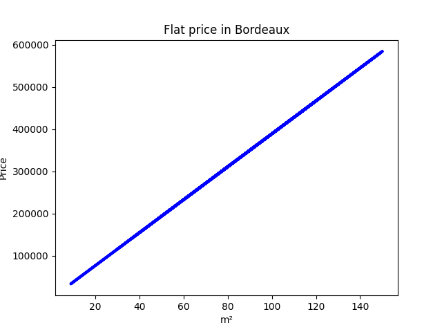
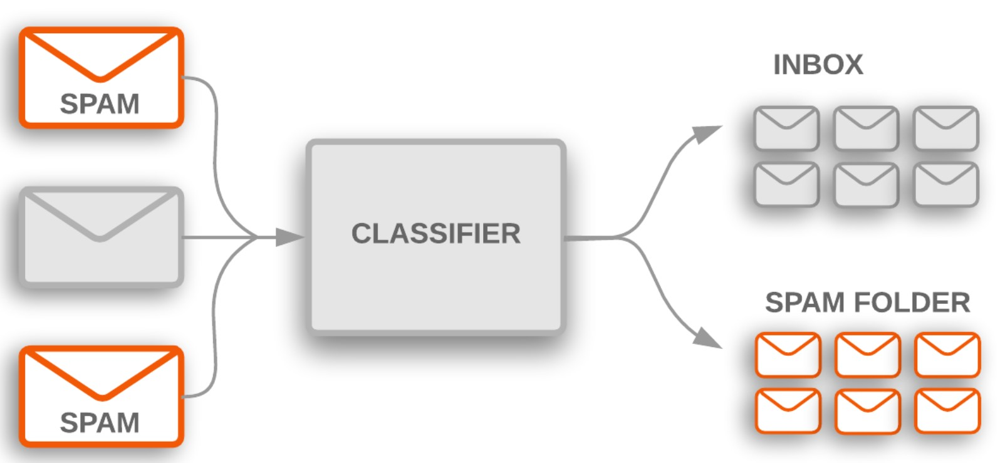

<!DOCTYPE html>
<html lang="en">
  <head>
    <meta charset="utf-8" />
    <meta name="viewport" content="width=device-width, initial-scale=1.0, maximum-scale=1.0, user-scalable=no" />

    <title>reveal-md</title>
    <link rel="shortcut icon" href="./favicon.ico" />
    <link rel="stylesheet" href="./dist/reset.css" />
    <link rel="stylesheet" href="./dist/reveal.css" />
    <link rel="stylesheet" href="./dist/theme/beige.css" id="theme" />
    <link rel="stylesheet" href="./css/highlight/base16/zenburn.css" />


    <script>
      document.write(
        '<script src="http://' +
          (location.host || 'localhost').split(':')[0] +
          ':35729/livereload.js?snipver=1"></' +
          'script>'
      );
    </script>
  </head>
  <body>
    <div class="reveal">
      <div class="slides"><section  data-markdown><script type="text/template">IA & Ethics  
2023-10-12  
Kedge Business School  
thomas.lentali@gmail.com  
</script></section><section  data-markdown><script type="text/template">
Smartphone ?

<p class="fragment" data-fragment-index="1">Image detection.</p>
</script></section><section  data-markdown><script type="text/template">
Netflix, Amazon Prime, Disney+, CBO, Spotify, Deezer?

<p class="fragment" data-fragment-index="1">Recommendation.</p>
</script></section><section  data-markdown><script type="text/template">
Amazon, Cdiscount, Betclic?

<p class="fragment" data-fragment-index="3">Personnalisation.</p>
</script></section><section  data-markdown><script type="text/template">
Google, Bing, Qwant, DuckDuckGo, Facebook, Insta, Uber, deliveroo?

<p class="fragment" data-fragment-index="4">Classifiaction, clustering.</p>
</script></section><section  data-markdown><script type="text/template">
ChatGPT ?

<p class="fragment" data-fragment-index="5">Natural langage processing.</p>
</script></section><section  data-markdown><script type="text/template">
Tu utilises de l'IA.
</script></section><section  data-markdown><script type="text/template">
Tu es utilisé pour renforcer ces IA.
</script></section><section  data-markdown><script type="text/template">

</script></section><section  data-markdown><script type="text/template">
### 1997 - IBM Deep Blue


Traditional computing
</script></section><section  data-markdown><script type="text/template">

</script></section><section  data-markdown><script type="text/template">
### 2016 - Google DeepMind AlphaGo


Machine learning
</script></section><section  data-markdown><script type="text/template">

</script></section><section  data-markdown><script type="text/template">
Comment ca marche ?
</script></section><section  data-markdown><script type="text/template">
modelisation
</script></section><section  data-markdown><script type="text/template">

</script></section><section  data-markdown><script type="text/template">

</script></section><section  data-markdown><script type="text/template">

</script></section><section  data-markdown><script type="text/template">
clustering


</script></section><section  data-markdown><script type="text/template">

</script></section><section  data-markdown><script type="text/template">
prediction du futur


</script></section><section  data-markdown><script type="text/template">
classification


</script></section><section  data-markdown><script type="text/template">
recommendation


</script></section><section  data-markdown><script type="text/template">
natural langage processing (google trad, ChatGPT)


</script></section><section  data-markdown><script type="text/template">
image detection (yolov3)


</script></section><section  data-markdown><script type="text/template">
Ethique
</script></section><section  data-markdown><script type="text/template">

</script></section><section  data-markdown><script type="text/template">


Un loup est un chien dans la neige.
</script></section><section  data-markdown><script type="text/template">
- detection de femme enceinte via recommandation de produit
- le 07 qui t'empeche d'avoir un credit
- le chatbot de Microsoft est raciste</script></section></div>
    </div>

    <script src="./dist/reveal.js"></script>

    <script src="./plugin/markdown/markdown.js"></script>
    <script src="./plugin/highlight/highlight.js"></script>
    <script src="./plugin/zoom/zoom.js"></script>
    <script src="./plugin/notes/notes.js"></script>
    <script src="./plugin/math/math.js"></script>
    <script>
      function extend() {
        var target = {};
        for (var i = 0; i < arguments.length; i++) {
          var source = arguments[i];
          for (var key in source) {
            if (source.hasOwnProperty(key)) {
              target[key] = source[key];
            }
          }
        }
        return target;
      }

      // default options to init reveal.js
      var defaultOptions = {
        controls: true,
        progress: true,
        history: true,
        center: true,
        transition: 'default', // none/fade/slide/convex/concave/zoom
        slideNumber: true,
        plugins: [
          RevealMarkdown,
          RevealHighlight,
          RevealZoom,
          RevealNotes,
          RevealMath
        ]
      };

      // options from URL query string
      var queryOptions = Reveal().getQueryHash() || {};

      var options = extend(defaultOptions, {}, queryOptions);
    </script>


    <script>
      Reveal.initialize(options);
    </script>
  </body>
</html>
